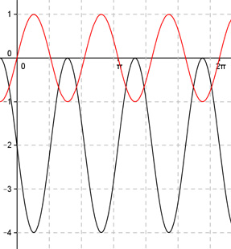

Aufgabe 250 Bestimmen Sie a, b und d für den dargestellten Graphen der Form y = a * sin (b * (x + c)) + d.  2 Abgelesen auf y = -2: Periode = ---п --> 3 2п |b| = ---- = 3 2п ---- 3 Abgelesen: Verschiebung entlang der y-Achse um -2 --> d = -2 asin(b(x + c)) - 2 Abgelesen: Keine Verschiebung entlang y = -2 --> c = 0 asin(b(x) - 2) Abgelesen: |a| = 2 Spiegelung an y = -2 --> a oder b negativ a = -2 und b = 3 y = -2sin(3x) - 2 oder Wegen -sin(x) = sin(-x) gilt auch: a = 2 und b = -3 y = 2sin(-3x) - 2 Zum Vergleich: sin(3x)